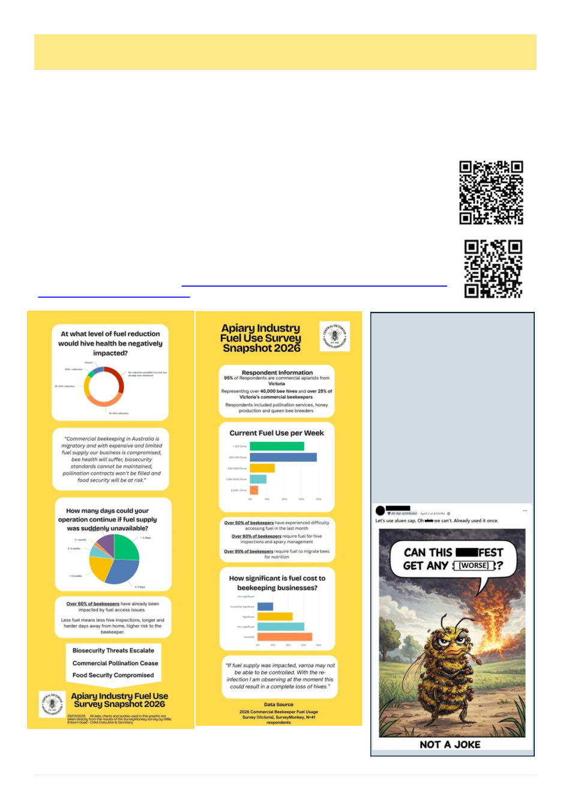

18
Australian Bee Journal
The Buzz On Facebook
There were also numerous posts
expressing exasperation and
frustration with the discovery of
resistance to pyrethroids and amitraz
among mites. This meme was
posted in multiple places (we had to
censor it here), this particular
instance adds the additional
frustration of the slow release Aluen
-Cap product having been only
approved for once a year by the
APVMA, leaving beekeepers with
limited options if neither of the
synthetics work and they find
themselves unable to use Aluen-Cap
again.
By Kris Fricke
Personally, I am not very active on social media but over the years I’ve had some younger coworkers who almost
daily reported to me what the beekeepers of Australia were talking about on Facebook at the moment. And not just
the younger ones, many beekeepers seem to regularly discuss the issues of the moment on Facebook. So I thought
for those of you like me who are missing out on those conversations, I would once a month do a quick round of the
Australian beekeeping groups and report on what the big topics that month were.
Fuel Concerns Fuel Concerns
Not surprisingly perhaps, rising fuel prices were on people’s minds, with the highest comment-
ed post I saw this month discussing whether people are adding a fuel levy to their pollination
fees. There was general concern on this topic but as to how to actually apply it there was no
consensus. Some advocated a percentage surcharge of upwards of 30% like freight companies,
while others suggested a flat rate per hive. One commenter showed the math working out that
the increased cost to him would be $6.60 per hive on a thousand kilometer round trip. The
broad consensus that one should do their math before signing any contracts.
The Central Victorian Apiarist’s Association has a survey they would like commercial beekeep-
ers to fill out about their fuel usage. It is still open and can be reached via this QR code (or in the
online version on this hyperlink): Survey: Central Victorian Apiarist’s Association Commer-